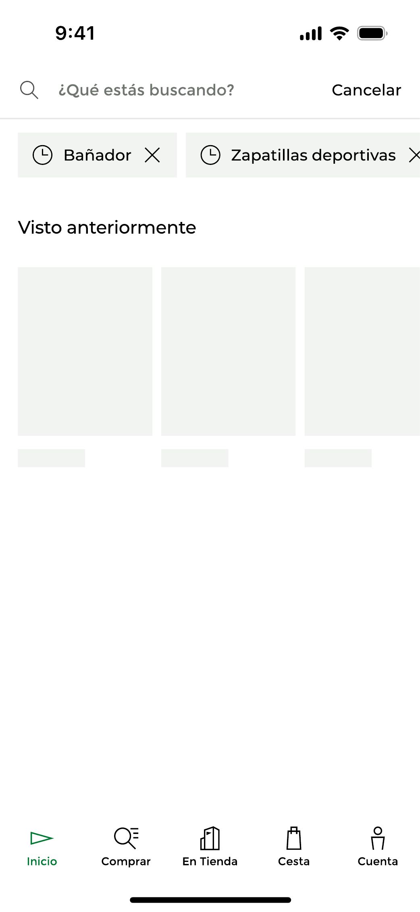
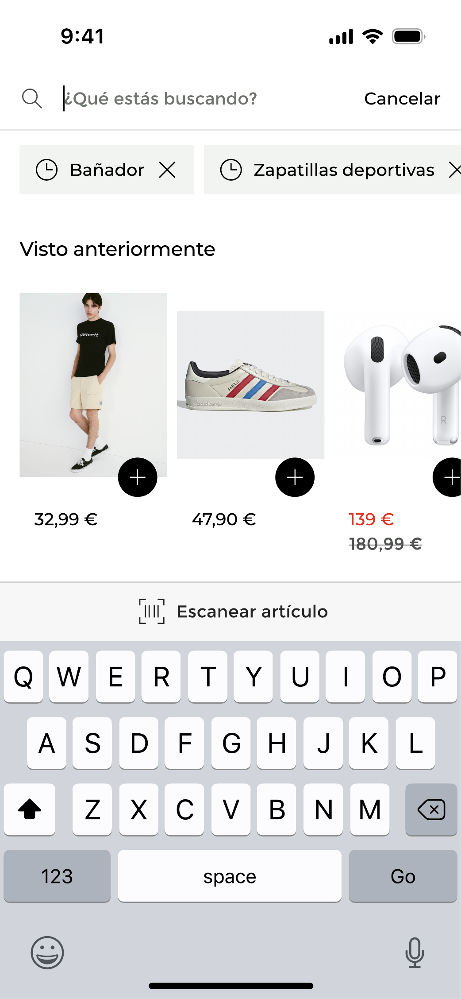
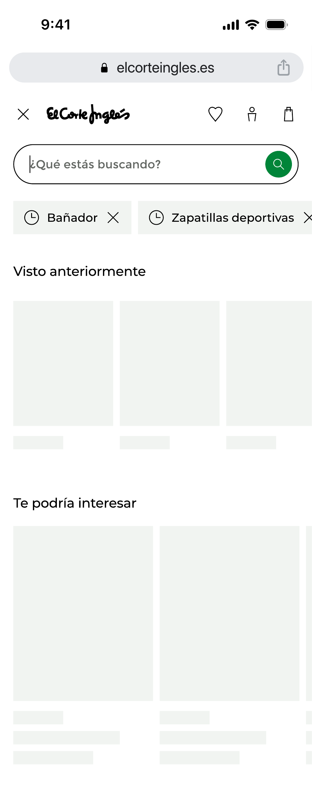
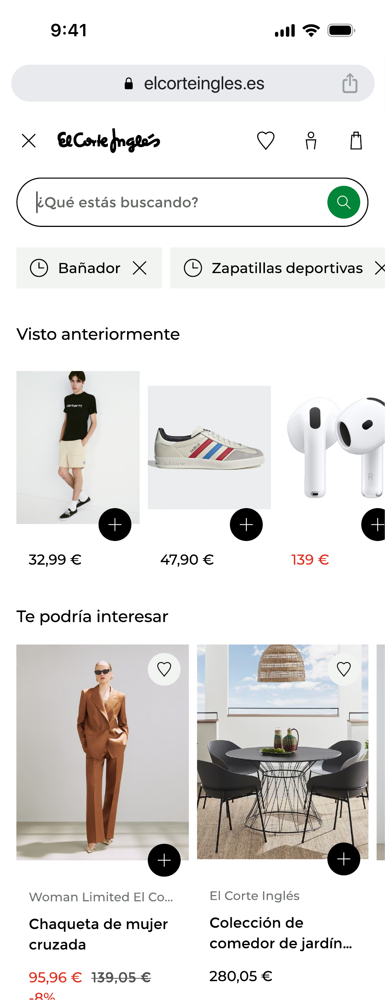
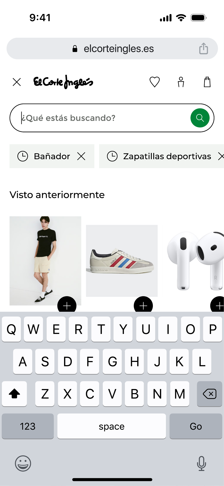
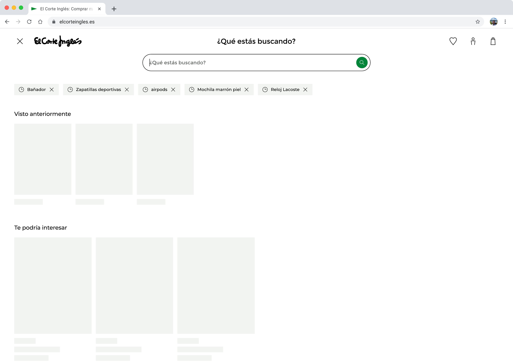
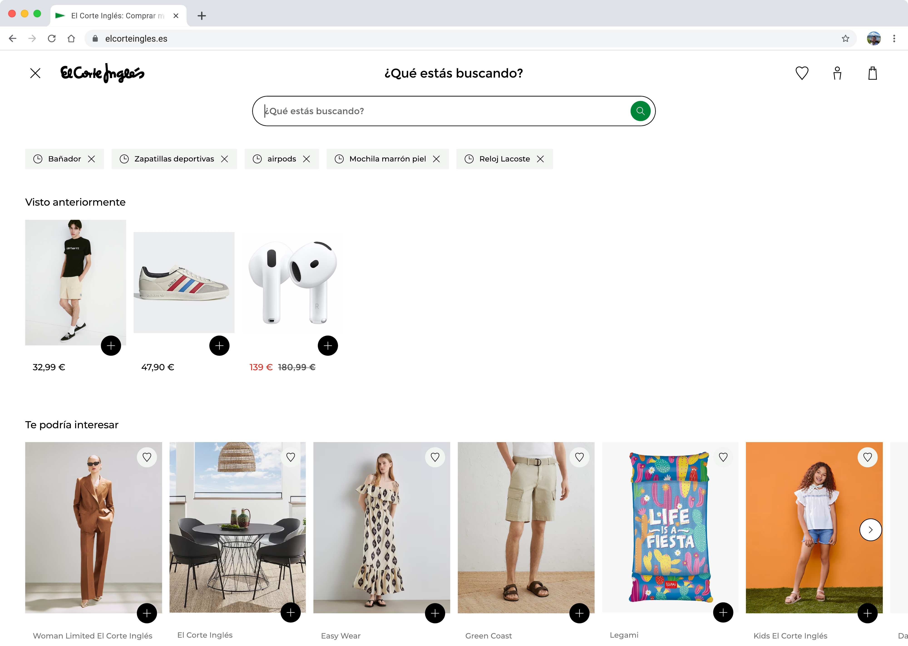
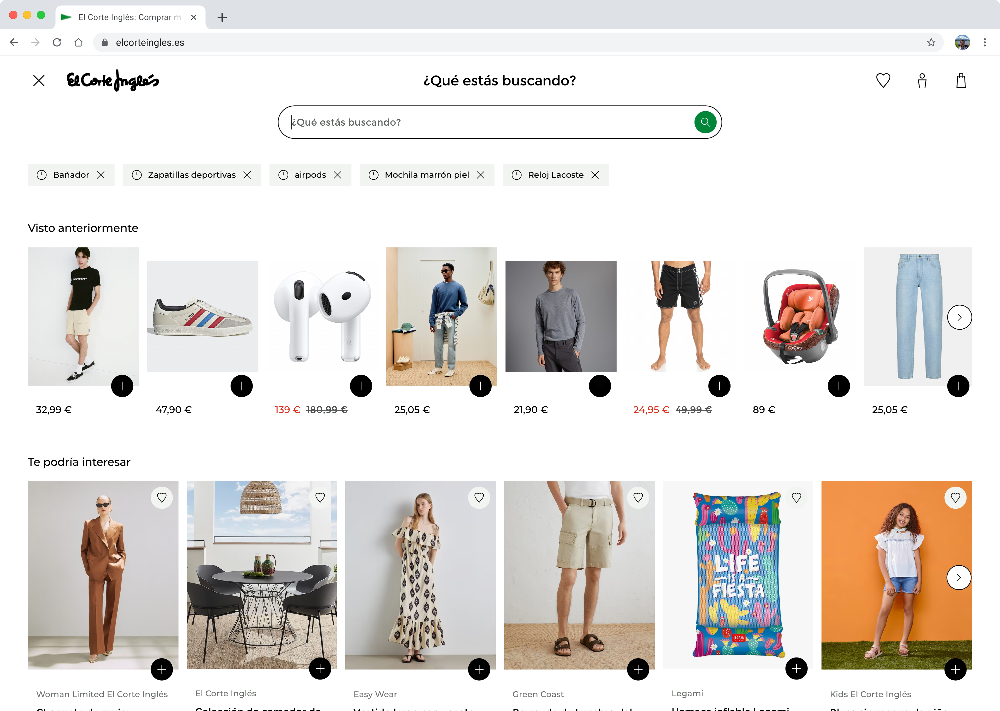

Diseño del momento cero de búsqueda para App, Web Mobile y Desktop de El Corte Inglés: un espacio inteligente que anticipa la intención del usuario antes de que escriba una sola letra.
En un retailer con el catálogo de El Corte Inglés —millones de referencias, decenas de categorías y múltiples marcas propias— el buscador no es una funcionalidad secundaria: es el punto de inicio del journey de compra para la mayoría de los usuarios. Sin embargo, el espacio que se mostraba al usuario al abrir el buscador estaba completamente vacío. Un campo de texto en blanco y silencio digital.
El concepto 'Zero Moment of Truth' (ZMOT), acuñado por Google, describe el instante en que un usuario toma la decisión de compra antes de interactuar con el producto. En el contexto del buscador, ese momento es literalmente el instante en que el usuario lo abre. La pantalla en blanco era una oportunidad perdida de mostrar al usuario contenido relevante basado en su historial, reducir la fricción cognitiva y acelerar el camino hasta la compra.
Cuando el usuario abre el buscador sin tener claro qué buscar, la pantalla vacía no le ofrece ningún punto de apoyo. El usuario tiene que recordar solo qué quería encontrar.
Un usuario que abandona la búsqueda sin encontrar lo que buscaba es un usuario que no compra. El estado inicial del buscador influye directamente en la tasa de conversión del canal.
El sistema ya tenía datos valiosos del usuario: búsquedas previas, productos vistos, comportamiento de navegación. El momento cero era el lugar natural para activarlos.
La industria lleva años documentando el impacto del buscador y la personalización en la conversión. Estos datos de referencia ayudaron a justificar la inversión y a dimensionar el potencial del proyecto.
El módulo de 'Visto anteriormente' —que recupera productos ya visitados— muestra un patrón especialmente sólido: retailers que implementaron carruseles de productos recientes en sus buscadores reportaron un incremento medio del 10–15% en el AOV (valor medio del pedido), ya que el usuario recupera contexto de compra sin abandonar el flujo. El módulo de 'Te podría interesar', basado en algoritmos de personalización conductual, tiene el potencial más alto: las recomendaciones personalizadas representan hasta el 31% del revenue total del e-commerce para los retailers que las implementan correctamente.
El nuevo momento cero de búsqueda se articuló en torno a tres módulos complementarios, cada uno activando un tipo distinto de datos del usuario para reducir la fricción y aumentar la relevancia percibida desde el primer frame.
Las últimas búsquedas del usuario se presentan como chips eliminables. El formato pill permite ver varias búsquedas a la vez sin ocupar espacio vertical, y el botón de eliminar da control al usuario sobre su historial. El módulo aparece únicamente si hay historial previo.
Un carrusel horizontal con los últimos productos que el usuario ha visitado, tanto en búsqueda como en navegación libre. Permite retomar el viaje de compra sin necesidad de recordar el nombre exacto del producto. Cada tarjeta muestra imagen, precio y, si aplica, el precio con descuento.
Módulo basado en el algoritmo de personalización conductual de ECI, que analiza todo el historial de actividad del usuario —búsquedas, visitas, compras— para proponer productos altamente relevantes. Es el módulo con mayor potencial de conversión incremental. Activo en web; en app está en roadmap.
"El momento cero no es un estado vacío a rellenar. Es la primera conversación entre el sistema y el usuario, y tiene que ser relevante desde el primer píxel."Pako Ortiz · Senior Product Designer
La app fue la primera plataforma en recibir los tres módulos del momento cero. El diseño prioriza la scanabilidad vertical, el scroll horizontal para el carrusel de productos y el acceso rápido a las búsquedas recientes con un solo tap. El módulo 'Te podría interesar' está pendiente de lanzamiento.


El diseño para web requirió adaptar los mismos módulos a dos contextos radicalmente distintos: Web Mobile (donde el buscador opera como un overlay a pantalla completa) y Desktop (donde el espacio disponible permite mostrar más productos en horizontal). En web, el módulo 'Te podría interesar' ya está activo.
Web Mobile





El rediseño del momento cero transformó un estado inexistente en uno de los espacios con mayor potencial de impacto en la conversión. Los módulos activos en producción ya están generando datos de comportamiento que alimentan la mejora continua del algoritmo de personalización.